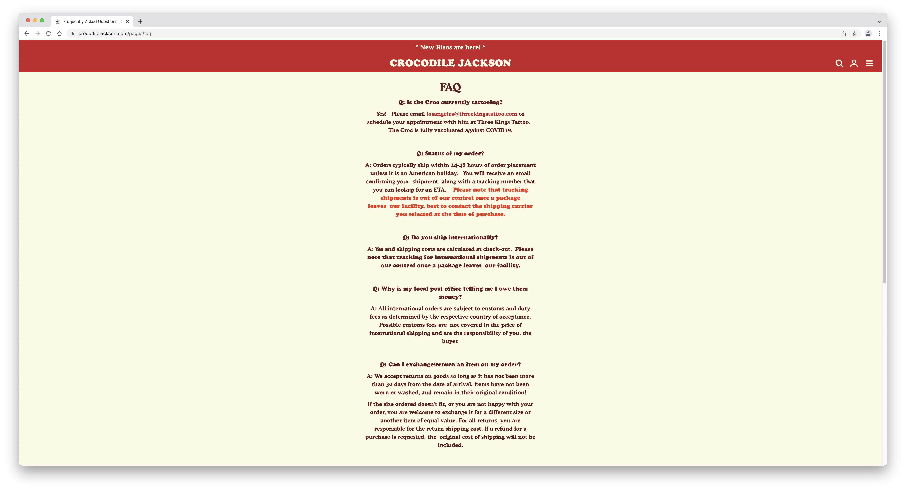
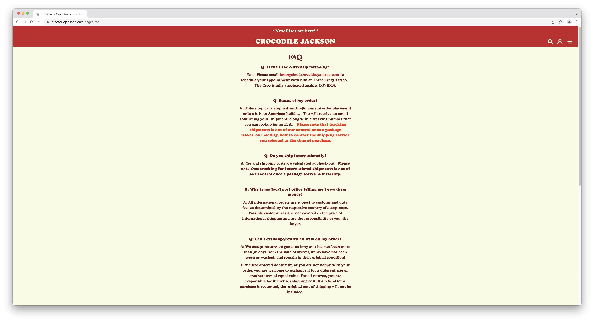
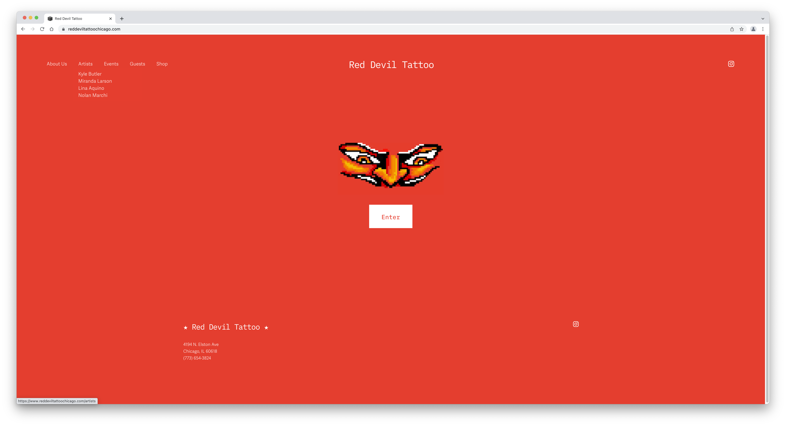

Final project proposal
Introduction
Cherry Wonder Tattoos
Cherry Wonder Tattoos is a small women and LGBTQ+ owned tattoo shop located in the heart of Portland. It has a very bright and almost child-like aesthetic. There are four tattoo artists currently employed there. They have the mission to push gender stereotypes in the male-dominated field of tattooing. Their main values include artistic expression, creation, and breaking norms.
Target audience
The target audience for this site are those interested in learning more about Cherry Wonder Tattoos's shop, values, events, artists, and FAQs. It is also a safe space for other women and LGBTQ+ folks and strives to have a diverse audience to reflect that. If someone comes across a tattoo artist's art on instagram who works here, they can go to Cherry Wonder Tattoo's site to get information about the location of the shop, and potentially get in contact with the artist to book an appointment.
The primary tasks and goals of the audience could be a multitude of things. It could be to browse the diferent artists' work and see what style they like. It could also be to get basic information on the shop, like its location or phone number. Another possibility would be to get in contact with one of the artists there to book an appointment. They would likely visit this site specifically because they enjoy the art or aesthetic of the artists or shop and want to learn more. This exposure could've been through physically seeing the shop or social media posts.
Comparative analysis
Website 1
 

Website 2


Website 3

Website content
About Us
Cherry Wonder Tattoos is a small women and LGBTQ+ owned tattoo shop located in the heart of Portland. Our four wonderful tattoo artists are always pushing gender stereotypes in this male-dominated field. We believe in artistic expression, creation, living, and loving.
[Owners of the tattoo shop.]
FAQ
Are walk-ins welcome?
Yes, we take both appointment and walk-in tattoos. Please keep in mind that all of our artists may be fully booked if you do not check in with us ahead of time. Also, depending on what youre looking for, we may not be able to accomidate you if you bring in your own design.
Is there a shop minimum?
Yes, the shop minimum is $80.
How much will my tattoo cost?
It depends. All tattoos are quoted based on size, detail, and placement. Additionally, some of our artists may choose between pricing the tattoo per hour versus the piece itself. Speak with your artis to get an actual quote.
How old do I have to be?
In Oregon, it is required that all tattooed individuals are at least 18 years of age. There is no option for guardian consent for those under 18.
How do I take care of my fresh tattoo?
Your artist will supply you with information regarding aftercare, however, we always recommend:
- Remove the bandage after 3 hours (do not re-bandage at any point)
- Wash with warm soapy water.
- Gently dry the tattoo.
- Apply a thin layer of fragrance free lotion 2-3 times a day after washing.
- Keep your tattoo clean, showering is ok.
- In 2-3 days the tattoo will begin to flake or scab
-
Please do not pick at your new tattoo
-
Please do not submerge your new tattoo in water
-
Please do not expose your tattoo to direct sunlight or tanning beds for 2 weeks
[Tattoo equimpment and aftercare products.]
Artists
[Geneva Lindsley, an artist and founder at Cherry Wonder Tattoos.]
Geneva Lindsley
Geneva is a Portland based tattoo artist who was originally from the San Diego area and has moved throughout America and has settled here. She loves her two pet rats, Jack and Juniper, and spends her free time listening to music, watching movies, and painting flash.
[Tadee Schmaltz, an artist and founder at Cherry Wonder Tattoos.]
Tadee Schmaltz
Tadee is a Portland based tattoo artist who grew up in San Diego, and always visited her sibiling in Oregon, until deciding to take the plunge and move north. She grew her passion for tattooing in college, experimenting with stick and pokes. She spends her free time creating art and cooking delicious meals.
[Grace Therrialut, an artist at Cherry Wonder Tattoos.]
Grace Therrialut
Grace is a Portland based tattoo artist who grew up in Ventura. She studied Graphic Communication in College and decided to join her friends and move to Oregon to pursure her passion for art and tattooing. She likes spend her free time surfing or at obsure house shows.
[Cladee Schmaltz, an artist at Cherry Wonder Tattoos.]
Cladee Schmaltz
Cladee is a Portland based tattoo artist who also grew up in the San Diego Area. She has loved Oregon for many years and after her sister, Tadee, moved out there, it became a no-brainer to join her in the Beaver State. She loves watching movies and playing her record collection in her free time.
Events
Next Month, from April 2nd-April 23rd, Britt Kuechenmeister and Theo (Tat2Soft) will be a guest artists at Cherry Wonder. We are extremely excited to welcome them to Portland and collab with them.
[Tattoo artist tattooing someone.]
Contact
Talk to us in person! We are located at 3082 Knott St, Portland OR 97212. We would love to talk to you about any quotes or questions you have for us!
You can also call us at (207)123-4567 or email us at cherrywondertattoo@gmail.com!
[Cherry Wonder Tattoo Storefront.]